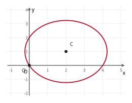
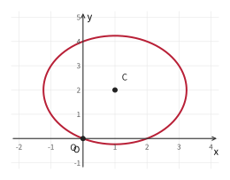
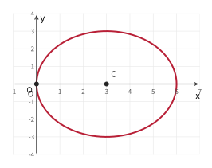

ホーム ＞ 数学C ＞ 媒介変数表示・極座標
別冊練習問題 7 の解答 極方程式 r=2a cosθ+2b sinθ の直交座標表示
(1) 極方程式 \(r=4\cos\theta+2\sin\theta\) を直交座標 \((x,y)\) の方程式で表し、どんな図形か答えよ。
両辺に r をかける
\[r^2=4r\cos\theta+2r\sin\theta\]
直交座標へ
\(x=r\cos\theta,\ y=r\sin\theta,\ r^2=x^2+y^2\)。
\[x^2+y^2=4x+2y\]平方完成
\[(x-2)^2+(y-1)^2=5\]

【答案】
\[(x-2)^2+(y-1)^2=5\ （中心 (2,1)、半径 \sqrt{5} の円）\]答
(2) 極方程式 \(r=2\cos\theta+4\sin\theta\) を直交座標 \((x,y)\) の方程式で表し、どんな図形か答えよ。
両辺に r をかける
\[r^2=2r\cos\theta+4r\sin\theta\]
直交座標へ
\(x=r\cos\theta,\ y=r\sin\theta,\ r^2=x^2+y^2\)。
\[x^2+y^2=2x+4y\]平方完成
\[(x-1)^2+(y-2)^2=5\]

【答案】
\[(x-1)^2+(y-2)^2=5\ （中心 (1,2)、半径 \sqrt{5} の円）\]答
(3) 極方程式 \(r=6\cos\theta\) を直交座標 \((x,y)\) の方程式で表し、どんな図形か答えよ。
両辺に r をかける
\[r^2=6r\cos\theta\sin\theta\]
直交座標へ
\(x=r\cos\theta,\ y=r\sin\theta,\ r^2=x^2+y^2\)。
\[x^2+y^2=6x\]平方完成
\[(x-3)^2+y^2=9\]

【答案】
\[(x-3)^2+y^2=9\ （中心 (3,0)、半径 3 の円）\]答